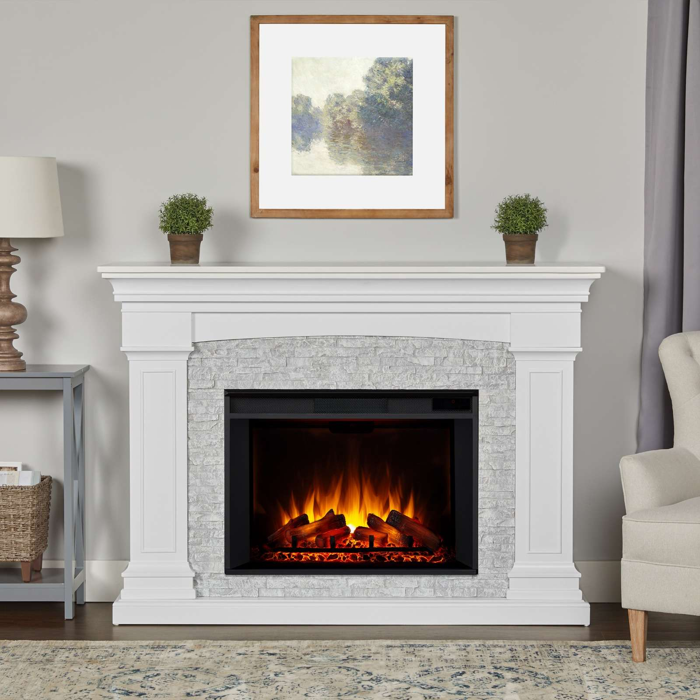

Investing in a new fireplace enhances your home's comfort and aesthetics, improves energy efficiency, and increases safety while adding value to your property.
Poetry reader
A poetry reader enhances the experience of poetry by providing curated selections, insightful commentary, and a deeper understanding of the craft, making it accessible and enjoyable for both new and seasoned readers.
Music
A music box adds a touch of nostalgia and charm to any space, offering a unique way to enjoy beautiful melodies while serving as a delightful decorative piece or sentimental gift.
Chairs
Investing in a new chair improves comfort and support, enhances productivity, and can elevate the aesthetic of your space, making it a worthwhile addition to any home or office.
Nursery
glass walls
Glass walls create an open and airy atmosphere, maximize natural light, and foster a sense of connection between spaces, making them a stylish and functional choice for modern living and working environments.